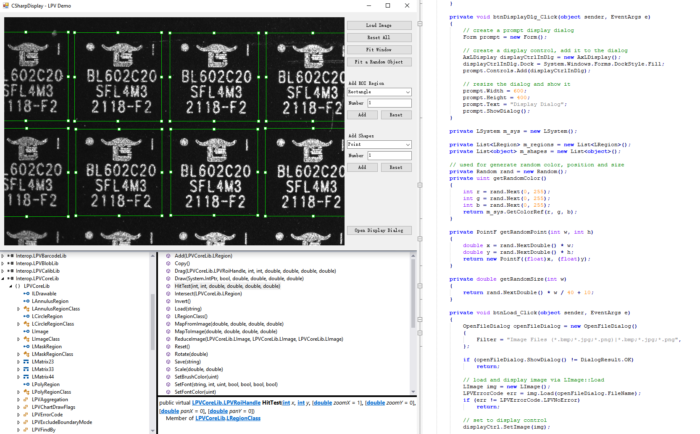

Leaper WaferScan Toolkit
|
 High-performance library of Leaper vision toolsLeaper WaferScan Toolkit (LPW) is designed to help user build the widest range of machine vision applications with ultimate flexibility. LPW allows developers to write their own vision processing, configure multi-threading, and access all tool properties and options. Take control of your machine vision systemsWith LPW, users get proven, reliable Leaper vision tools and the freedom to build the widest range of machine vision applications including guidance, inspection, gauging, and identification. |
Cost-effective, high-quality production of semiconductors and LEDs require speed, accuracy and frictionless tracking through the whole fabrication. Semiconductor manufacturers and OEMs rely on Leaper machine vision technology to ensure precise alignment of wafers during sorting, counting, masking and etching processes, increase traceability of wafers and die as they move through the front and back-end processes, and improve product quality through advanced inspection procedures.
LPW is designed for OEMs and advanced vision systems developers in mind. Extensive libraries and user controls fully integrate LPW software into OEM and capital equipment machines.
IntelliBlink is a lightweight intelligent machine vision platform powered by Leaper Vision. You can use its WYSIWYG user interface to develop various optical location and measurement tasks via drag-and-drop operations, and benefits from its powerful algorithm toolkits. LPW is capable to connect to IntelliBlink seamlessly, helps you to make use of the easy-built IntelliBlink tasks, integrate, execute and manipulate them in a LPW application.